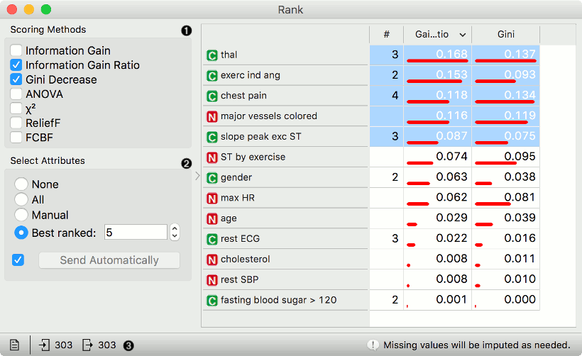
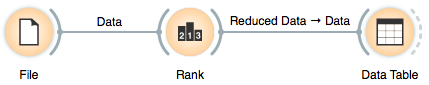
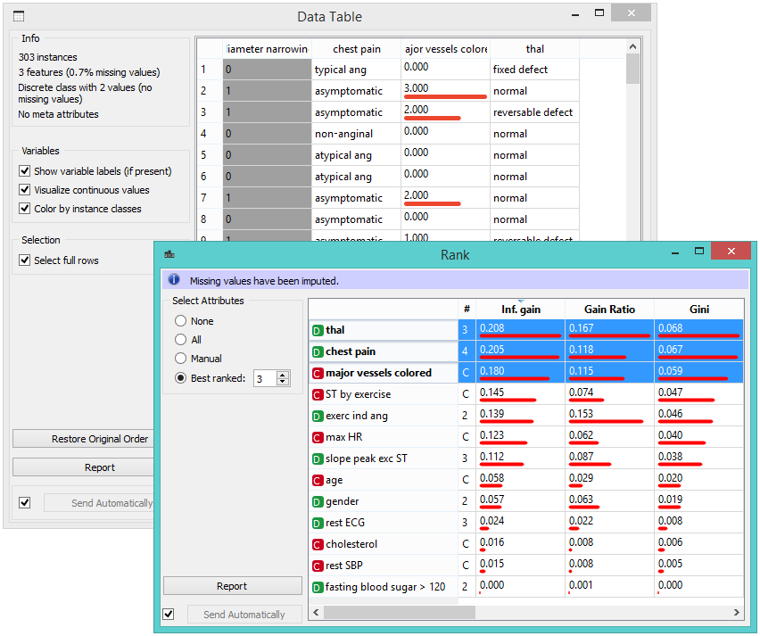
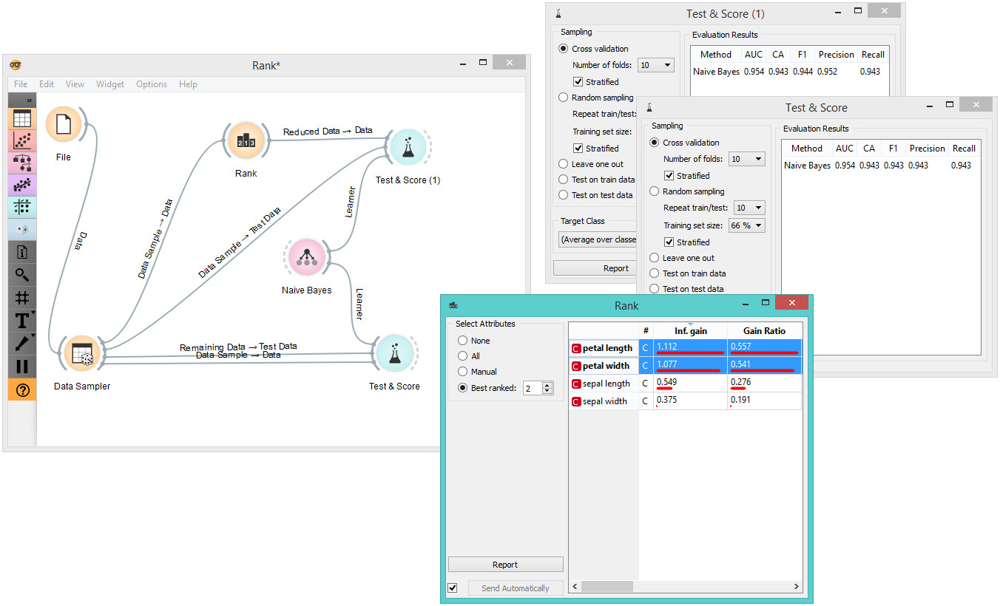

Rank
Ranking of attributes in classification or regression datasets.
Inputs
- Data: input dataset
- Scorer: models for feature scoring
Outputs
- Reduced Data: dataset with selected attributes
- Scores: data table with feature scores
- Features: list of attributes
The Rank widget scores variables according to their correlation with discrete or numeric target variable, based on applicable internal scorers (like information gain, chi-square and linear regression) and any connected external models that supports scoring, such as linear regression, logistic regression, random forest, SGD, etc. The widget can also handle unsupervised data, but only by external scorers, such as PCA.

- Select scoring methods. See the options for classification, regression and unsupervised data in the Scoring methods section.
- Select attributes to output. None won’t output any attributes, while All will output all of them. With manual selection, select the attributes from the table on the right. Best ranked will output n best ranked attributes. If Send Automatically is ticked, the widget automatically communicates changes to other widgets.
- Status bar. Produce a report by clicking on the file icon. Observe input and output of the widget. On the right, warnings and errors are shown.
Scoring methods (classification)
- Information Gain: the expected amount of information (reduction of entropy)
- Gain Ratio: a ratio of the information gain and the attribute’s intrinsic information, which reduces the bias towards multivalued features that occurs in information gain
- Gini: the inequality among values of a frequency distribution
- ANOVA: the difference between average values of the feature in different classes
- Chi2: dependence between the feature and the class as measured by the chi-square statistic
- ReliefF: the ability of an attribute to distinguish between classes on similar data instances
- FCBF (Fast Correlation Based Filter): entropy-based measure, which also identifies redundancy due to pairwise correlations between features
Additionally, you can connect certain learners that enable scoring the features according to how important they are in models that the learners build (e.g. Logistic Regression, Random Forest, SGD). Please note that the data is normalized before ranking.
Scoring methods (regression)
- Univariate Regression: linear regression for a single variable
- RReliefF: relative distance between the predicted (class) values of the two instances.
Additionally, you can connect regression learners (e.g. Linear Regression, Random Forest, SGD). Please note that the data is normalized before ranking.
Scoring method (unsupervised)
Currently, only PCA is supported for unsupervised data. Connect PCA to Rank to obtain the scores. The scores correspond to the correlation of a variable with the individual principal component.
Scoring with learners
Rank can also use certain learners for feature scoring. See Learners as Scorers for an example.
Example: Attribute Ranking and Selection
Below, we have used the Rank widget immediately after the File widget to reduce the set of data attributes and include only the most informative ones:

Notice how the widget outputs a dataset that includes only the best-scored attributes:

Example: Feature Subset Selection for Machine Learning
What follows is a bit more complicated example. In the workflow below, we first split the data into a training set and a test set. In the upper branch, the training data passes through the Rank widget to select the most informative attributes, while in the lower branch there is no feature selection. Both feature selected and original datasets are passed to their own Test & Score widgets, which develop a Naive Bayes classifier and score it on a test set.

For datasets with many features, a naive Bayesian classifier feature selection, as shown above, would often yield a better predictive accuracy.